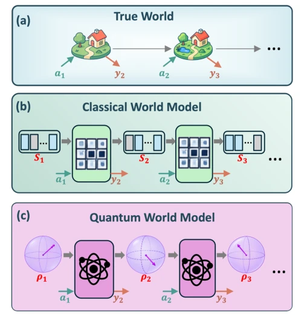
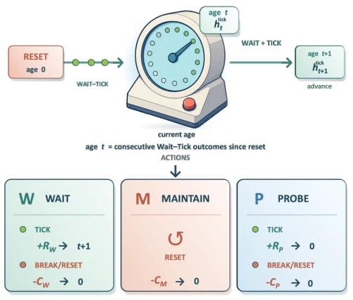
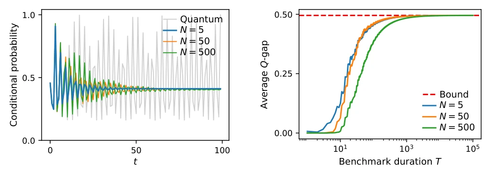
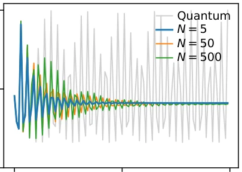

This paper attempts to employ quantum mechanics to "dimensionally reduce" classical world models, claiming that finite-memory classical models are destined to fail perfect alignment under specific true worlds, whereas a single qutrit quantum model can reproduce them precisely. The authors construct a mathematical toy based on an FRDN clock, proving that regardless of the size of classical memory, there exists an irreducible lower bound on prediction error. The highlight lies in revealing the fundamental limitations of physical encoding on representational capacity, breaking the myth that "accumulating classical memory is sufficient to solve it." The limitation is that the true world construction is too idealized, and quantum implementation faces significant noise and hardware challenges, currently remaining at the theoretical proof stage. For embodied intelligence, this is an important theoretical boundary warning regarding "model fidelity," but there is still a gap to actual engineering applications, resembling more a mathematical exploration of physical limits than a plug-and-play solution, after all, physical resource constraints in reality are far more complex than models.
Embodied intelligence relies on world models to train agents in low-cost simulations, but complex environments possess non-Markovian properties, requiring memory to capture historical dependencies [10-12]. Existing classical world models are constrained by finite memory; as time progresses, their predictions deviate from true reward potential, leading to policy alignment failure [16-18]. Even with increased classical memory, average error under certain specific trajectories cannot be eliminated. The authors point out that physical resources (memory) fundamentally limit model representational capacity, while quantum superposition states may break this limitation. Existing research mostly focuses on neural network architecture optimization [4, 7, 9], but ignores the limitations of underlying physical encoding. This paper aims to fill this theoretical gap, proving that quantum resources possess an irreducible advantage on specific tasks.
The overall framework is based on a "resettable FRDN clock" to construct the true world. The agent interacts with the environment through three actions: Wait, Maintain, Probe, observing Tick or Break and receiving rewards. The core innovation lies in comparing the dynamic evolution of classical and quantum memory. Classical models use finite-state Markov chains, limited by Perron-Frobenius theory; long-term predictions converge to finite cycles, unable to match the true world's aperiodic oscillating probability distribution. Quantum models utilize the Hilbert space of a single qutrit, accumulating phases through unitary rotations to precisely encode age-dependent survival probability S(t). Specific process: 1. Define true world dynamics (Renewal process); 2. Construct classical HMM model, prove its asymptotic error lower bound; 3. Design quantum instrument operations {E(a)y}, utilize coherence to reproduce aperiodic dependencies; 4. Verify that the quantum model is completely consistent with the true world in action-value functions and optimal policies.

Figure 1. Classical and quantum world models. The true world represents reality (a). At each time step, it re- ceives an action at and returns an outcome yt+1 that consists of an observation and reward. A world model reproduces this input–output behavior through recurrent internal dynamics, updating its memory from one simulated step to the next. In a classical world model (b), a classical register with a finite number of bits carries the memory, and it evolves under clas- sical stochastic updates. In a quantum world model (c), the memory is encoded in a finite number of qubits and evolves through quantum operations.

Figure 2. The resettable FRDN clock world. The dis- played signs illustrate a representative payoff regime: Wait offers a reward +RW if the clock advances but risks a failure cost −CW ; Maintain accepts the known cost −CM of an im- mediate reset; and Probe also resets, with reward +RP or cost −CP determined by whether the clock would have advanced. The diagram thus contrasts risky continuation under Wait, a certain outcome under Maintain, and an outcome-dependent bet under Probe, creating a nontrivial decision problem.
实验Experiments
实验未使用真实机器人数据，而是数值模拟。基线为不同维度 N (5, 50, 500) 的经典世界模型，对比单 qutrit 量子模型。评测指标包括条件 Tick 概率误差和平均动作值误差 (Average Q-gap)。结果显示，经典模型随着 N 增加仅能延长有效预测范围，但长期平均误差存在独立于维度的下界（见图 4）。量子模型在所有时间步误差为零。消融分析表明，经典模型在长轨迹下必然丢失决策分辨率或推荐次优动作。这证实了有限经典内存无法消除特定真世界下的对齐鸿沟，而量子资源可完美解决。
Experiments did not use real robot data, but numerical simulations. Baselines are classical world models of different dimensions N (5, 50, 500), compared with a single qutrit quantum model. Evaluation metrics include conditional Tick probability error and average action-value error (Average Q-gap). Results show that classical models can only extend the effective prediction range as N increases, but long-term average error has a lower bound independent of dimension (see Fig. 4). The quantum model has zero error at all time steps. Ablation analysis indicates that classical models inevitably lose decision resolution or recommend suboptimal actions under long trajectories. This confirms that finite classical memory cannot eliminate the alignment gap under specific true worlds, while quantum resources can perfectly solve it.

Figure 4. Average Wait action-value error for one-step setting. The one-step rewards are set to RW = CW = CM = CP = 1 and RP = −1, with γ = 0. Consequently, the plot- ted quantity for each T is 1 T PT t=1 Qopt ⋆,W (←− h t) −Qopt M,W (←− h t) . The dashed red line marks the dimension-independent lower bound on its asymptotic average derived in Appendix B 3. Blue, orange, and green correspond to N = 5, N = 50, and N = 500, respectively. Here the average Q-gap represents the errors of classical models, and lower curves mean better mod- els with low error. Larger memories postpone the discrepancy to later clock ages but do not eliminate its asymptotic aver- age. The qutrit world model has zero error for every T; its curve coincides with the horizontal axis and is omitted for clarity.

Figure 3. Conditional Tick probabilities. Probability of one additional Tick after ←− h t for λ = 0.4 and α = π/ √